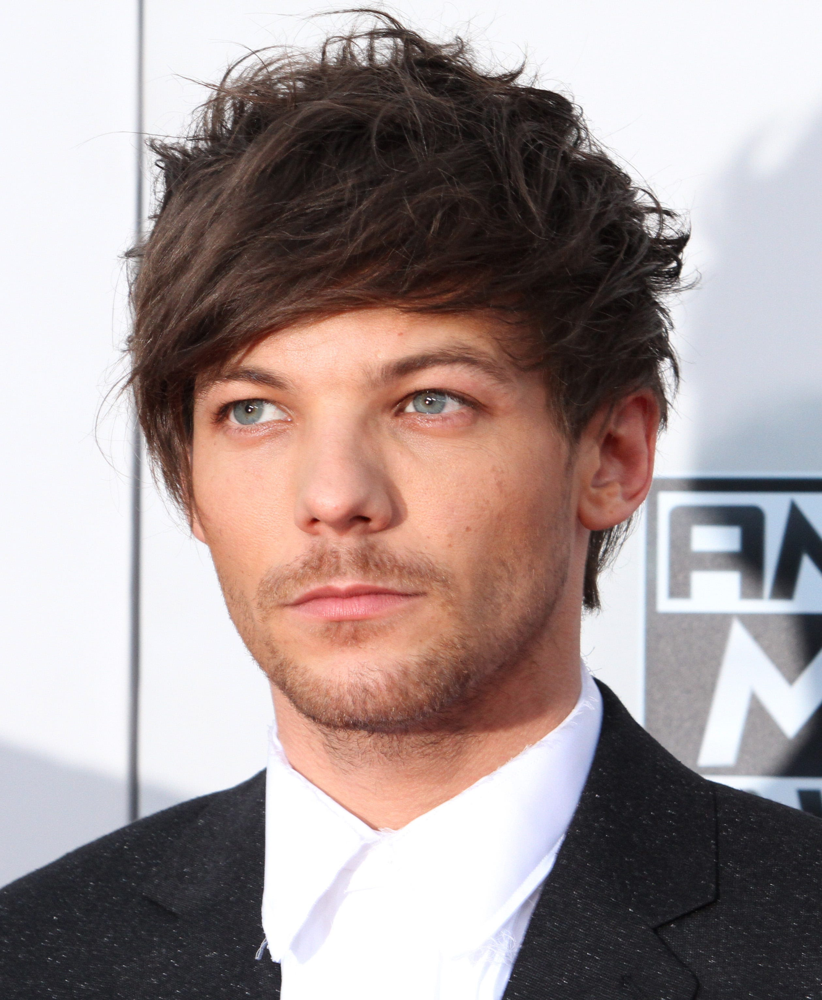
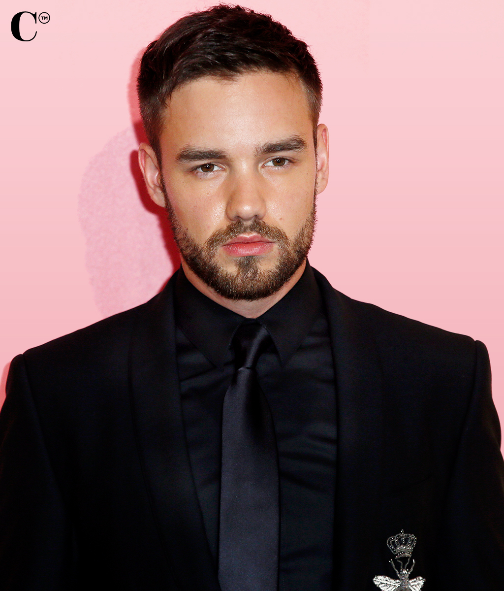

Welcome To The Gallery
- Black
- purple
- Yellow
- Pink
- Cyan
- Gray
- Blue
- Black
- purple
- Yellow
- Pink
- Cyan
- Gray
- Blue
One Direction
Louis William Tomlinson
Louis William Tomlinson was born on 24 December 1991.He is an English singer and songwriter.He rose to fame as a member of the boy band One Direction.Louis appeared as an extra character in the 2006 film 'If I Had You'.
">Harry Edward Styles
Harry Edward Styles was born on 1 February 1994 in England. He is an English singer, songwriter, and actor.His musical career began in 2010 as a solo contestant.Styles released his self-titled debut solo album in 2017.It debuted at number one in the UK and the US and was one of the world's top-ten best-selling albums of the year.
">Liam James Payne
Liam James Payne was born on 29 August 1993 in England.He is an English singer. He rose to fame as a member of the boy band One Direction.Payne made his debut as a singer in 2008.Liam's parents are Geoff and Karen Payne. He has two sisters, Ruth and Nicola He also has a son named Bear.
">Niall James Horan
......Niall James Horan was born on 13 September 1993 in Mullingar, County Westmeath, Ireland.He is an Irish singer and songwriter.He rose to prominence as a member of the English-Irish boy band One Direction. He has an older brother, Greg.His parents are Bobby Horan and Maura Gallagher.
">Zayn Malik
Zayn Malik was born Zain Javadd Malik on 12 January 1993 in England, to an immigrant Pakistani Muslim father(Yaser Malik) and a White British mother of English and Irish descent.Malik has one older sister and two younger sisters.Zayn left the group in March 2015.
">One Direction
One Direction are an English-Irish pop boy band formed in London, England in 2010.The group are composed of Niall Horan, Liam Payne, Harry Styles and Louis Tomlinson. Zayn Malik left the group in March 2015.They have released 6 albums named Up-All-Night,Take Me Home,Midnight Memories,Four,Made in the A.M.
">
×